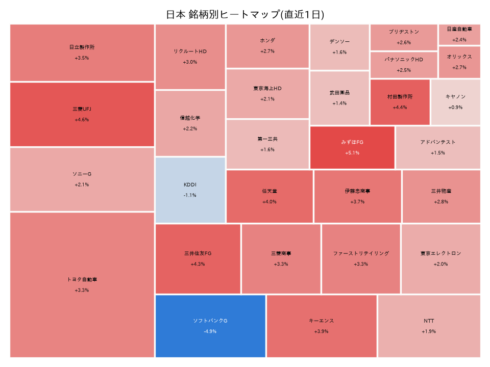
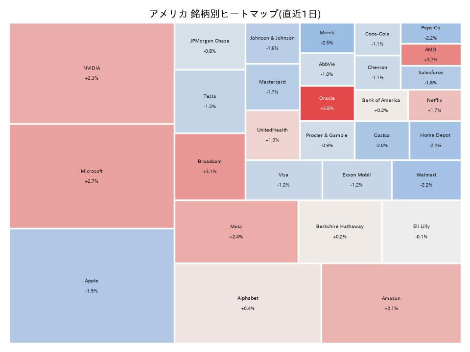
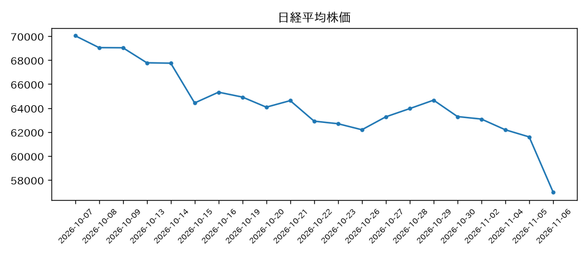
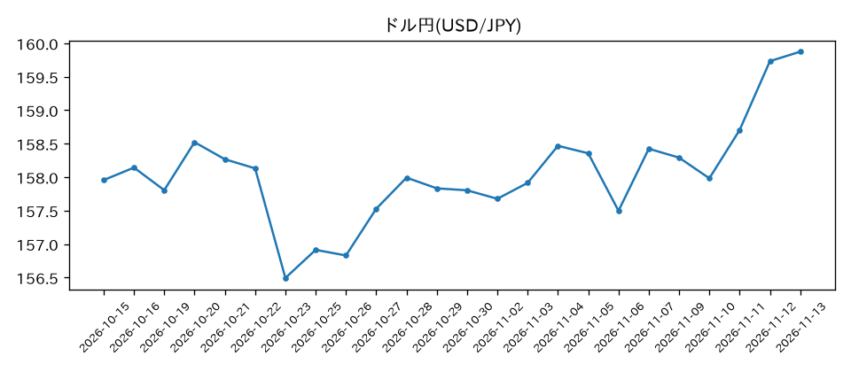
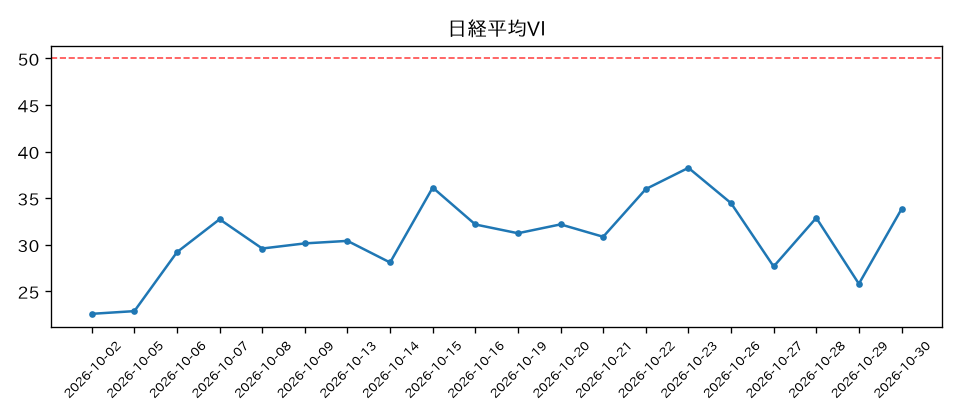
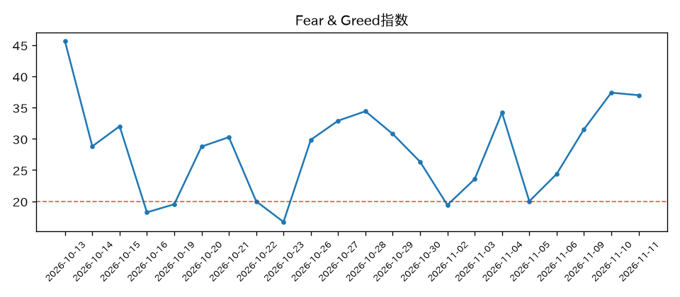

# 市場分析コメント（2026年11月9日時点） ## 日経平均株価の急落局面 日経平均は11月6日に57,434円まで急落し、直近高値である10月13日の67,777円から約1万円（▲15%）の大幅な調整となりました。11月9日時点では58,655円とやや反発したものの、依然として6万円を割り込む水準で推移しています。特に11月5日の61,077円から翌6日の57,434円にかけての▲3,643円（▲6.0%）の下落は、約1か月の調整トレンドの中でも際立った急落でした。 ## ドル円は底堅く推移 ドル円は158円台前半で比較的安定して推移しており、株価の急落局面でも大きな円高進行は見られていません。本来、リスク回避局面では円買いが進みやすいものの、今回は為替の反応が限定的である点が特徴的です。この点から、今回の株安は為替主導というより、株式市場固有の調整要因が主因である可能性がうかがえます。 ## 日経平均VI：警戒感の高まり 日経平均VIは11月4日の24.98から11月6日には**44.60**まで急上昇しました。警戒ライン（50以上）には達していないものの、短期間での急騰は投資家の不安心理の高まりを示しており、ボラティリティの拡大には引き続き注意が必要です。 ## Fear & Greed指数：恐怖寄りで推移 Fear & Greed指数は直近で20〜22付近を推移しており、**極度の恐怖（20以下）に接近する水準**にあります。10月16日（18.21）や10月23日（16.68）、11月2日（19.39）には一時20を割り込む「極度の恐怖」局面も観測されており、市場心理は総じて慎重・弱気に傾いています。 ## 総括 今回の局面は、ドル円が安定する一方で株価が急落し、VIの急上昇とFear & Greed指数の低迷が重なる、リスクオフ色の強い展開となっています。短期的な反発の兆しは見られるものの、投資家心理の冷え込みとボラティリティの高止まりが続く可能性があり、当面は値動きの荒い展開に留意すべき局面と考えられます。 --- ※本コメントは市場データに基づく客観的な観察であり、特定の投資行動を推奨するものではありません。投資判断はご自身の責任で行ってください。
前日の実体の中に当日の小さな実体が収まる。勢いが内側にせき止められ、底打ちの予兆(安値圏)
2026-11-06に材料なき前日比-6.0%の急落。そこから反発しつつあり、逆張りの買い場となる可能性(ニュースの有無は要確認)。
25日移動平均線から-9.6%乖離した後、反発の陽線。「適正価格」への回帰(引力)が期待される逆張りポイント。
株価が-2σ(統計上95.4%の範囲の外)まで到達。売られすぎの限界点に近く、反発の可能性が高まっている水準。
前日の実体の中に当日の小さな実体が収まる。勢いが内側にせき止められ、トレンド転換の予兆
2026-11-06に材料なき前日比-5.5%の急落。そこから反発しつつあり、逆張りの買い場となる可能性(ニュースの有無は要確認)。
前日の実体の中に当日の小さな実体が収まる。勢いが内側にせき止められ、トレンド転換の予兆
窓開けで孤立した後、逆方向へ窓を開けて急伸。絶望の底からの反転(全力買いの合図)。
2026-11-06に材料なき前日比-6.5%の急落。そこから反発しつつあり、逆張りの買い場となる可能性(ニュースの有無は要確認)。
2つの高値が近い水準(81,410.0/79,190.0)で、ネックライン(77,270.0)を下抜け。下降トレンドへの転換。
窓開けで孤立した後、逆方向へ窓を開けて急伸。絶望の底からの反転(全力買いの合図)。
2026-11-06に材料なき前日比-3.6%の急落。そこから反発しつつあり、逆張りの買い場となる可能性(ニュースの有無は要確認)。
25日移動平均線から-7.7%乖離した後、反発の陽線。「適正価格」への回帰(引力)が期待される逆張りポイント。
株価が-2σ(統計上95.4%の範囲の外)まで到達。売られすぎの限界点に近く、反発の可能性が高まっている水準。
株価が-2σ(統計上95.4%の範囲の外)まで到達。売られすぎの限界点に近く、反発の可能性が高まっている水準。
2つの高値が近い水準(178.1/174.5)で、ネックライン(171.5)を下抜け。下降トレンドへの転換。
2026-11-06に材料なき前日比-2.9%の急落。そこから反発しつつあり、逆張りの買い場となる可能性(ニュースの有無は要確認)。
株価が-2σ(統計上95.4%の範囲の外)まで到達。売られすぎの限界点に近く、反発の可能性が高まっている水準。
窓開けで孤立した後、逆方向へ窓を開けて急伸。絶望の底からの反転(全力買いの合図)。
2026-11-06に材料なき前日比-5.7%の急落。そこから反発しつつあり、逆張りの買い場となる可能性(ニュースの有無は要確認)。
窓開けで孤立した後、逆方向へ窓を開けて急伸。絶望の底からの反転(全力買いの合図)。
2026-11-06に材料なき前日比-4.8%の急落。そこから反発しつつあり、逆張りの買い場となる可能性(ニュースの有無は要確認)。
株価が-2σ(統計上95.4%の範囲の外)まで到達。売られすぎの限界点に近く、反発の可能性が高まっている水準。
RCI(9日)が-95.0%と-90%以下の売られすぎの極致。高確率でのリバウンドが期待される水準。
2つの高値が近い水準(6,175.0/6,010.0)で、ネックライン(5,783.0)を下抜け。下降トレンドへの転換。
2026-11-06に材料なき前日比-6.7%の急落。そこから反発しつつあり、逆張りの買い場となる可能性(ニュースの有無は要確認)。
25日移動平均線から-8.5%乖離した後、反発の陽線。「適正価格」への回帰(引力)が期待される逆張りポイント。
株価が-2σ(統計上95.4%の範囲の外)まで到達。売られすぎの限界点に近く、反発の可能性が高まっている水準。
2つの高値が近い水準(19,175.0/19,200.0)で、ネックライン(18,725.0)を下抜け。下降トレンドへの転換。
2026-11-06に材料なき前日比-5.6%の急落。そこから反発しつつあり、逆張りの買い場となる可能性(ニュースの有無は要確認)。
2026-11-06に材料なき前日比-7.9%の急落。そこから反発しつつあり、逆張りの買い場となる可能性(ニュースの有無は要確認)。
2026-11-06に材料なき前日比-6.0%の急落。そこから反発しつつあり、逆張りの買い場となる可能性(ニュースの有無は要確認)。
2026-11-06に材料なき前日比-8.3%の急落。そこから反発しつつあり、逆張りの買い場となる可能性(ニュースの有無は要確認)。
株価が-2σ(統計上95.4%の範囲の外)まで到達。売られすぎの限界点に近く、反発の可能性が高まっている水準。
2つの底値が近い水準(2,158.0/2,138.5)で、ネックライン(2,207.5)を上抜け。上昇トレンドへの転換。
2026-11-06に材料なき前日比-6.4%の急落。そこから反発しつつあり、逆張りの買い場となる可能性(ニュースの有無は要確認)。
2026-11-06に材料なき前日比-5.7%の急落。そこから反発しつつあり、逆張りの買い場となる可能性(ニュースの有無は要確認)。
2つの底値が近い水準(1,809.0/1,837.5)で、ネックライン(1,868.5)を上抜け。上昇トレンドへの転換。
2026-11-06に材料なき前日比-3.4%の急落。そこから反発しつつあり、逆張りの買い場となる可能性(ニュースの有無は要確認)。
2026-11-06に材料なき前日比-3.0%の急落。そこから反発しつつあり、逆張りの買い場となる可能性(ニュースの有無は要確認)。
25日移動平均線から-26.2%乖離した後、反発の陽線。「適正価格」への回帰(引力)が期待される逆張りポイント。
前日の実体の中に当日の小さな実体が収まる。勢いが内側にせき止められ、トレンド転換の予兆
2026-11-06に材料なき前日比-10.1%の急落。そこから反発しつつあり、逆張りの買い場となる可能性(ニュースの有無は要確認)。
2026-11-06に材料なき前日比-4.8%の急落。そこから反発しつつあり、逆張りの買い場となる可能性(ニュースの有無は要確認)。
窓開けで孤立した後、逆方向へ窓を開けて急伸。絶望の底からの反転(全力買いの合図)。
2026-11-06に材料なき前日比-5.1%の急落。そこから反発しつつあり、逆張りの買い場となる可能性(ニュースの有無は要確認)。
25日移動平均線から-21.4%乖離した後、反発の陽線。「適正価格」への回帰(引力)が期待される逆張りポイント。
始値と終値が拮抗し、相場の迷い・転換を示唆。
前日の実体の中に当日の小さな実体が収まる。勢いが内側にせき止められ、トレンド転換の予兆
2026-11-06に材料なき前日比-4.8%の急落。そこから反発しつつあり、逆張りの買い場となる可能性(ニュースの有無は要確認)。
窓開けで孤立した後、逆方向へ窓を開けて急伸。絶望の底からの反転(全力買いの合図)。
2026-11-06に材料なき前日比-7.0%の急落。そこから反発しつつあり、逆張りの買い場となる可能性(ニュースの有無は要確認)。
2026-11-06に材料なき前日比-6.0%の急落。そこから反発しつつあり、逆張りの買い場となる可能性(ニュースの有無は要確認)。
2つの高値が近い水準(5,877.0/5,856.0)で、ネックライン(5,721.0)を下抜け。下降トレンドへの転換。
2026-11-06に材料なき前日比-7.8%の急落。そこから反発しつつあり、逆張りの買い場となる可能性(ニュースの有無は要確認)。
株価が-2σ(統計上95.4%の範囲の外)まで到達。売られすぎの限界点に近く、反発の可能性が高まっている水準。
安値圏での十字線。下落の勢いが拮抗し、上昇相場への転換の可能性。
2026-11-06に材料なき前日比-5.0%の急落。そこから反発しつつあり、逆張りの買い場となる可能性(ニュースの有無は要確認)。
25日移動平均線から-20.1%乖離した後、反発の陽線。「適正価格」への回帰(引力)が期待される逆張りポイント。
株価が-2σ(統計上95.4%の範囲の外)まで到達。売られすぎの限界点に近く、反発の可能性が高まっている水準。
2026-11-06に材料なき前日比-3.5%の急落。そこから反発しつつあり、逆張りの買い場となる可能性(ニュースの有無は要確認)。
2つの底値が近い水準(73,850.0/73,520.0)で、ネックライン(75,880.0)を上抜け。上昇トレンドへの転換。
2026-11-06に材料なき前日比-3.8%の急落。そこから反発しつつあり、逆張りの買い場となる可能性(ニュースの有無は要確認)。
2026-11-06に材料なき前日比-5.6%の急落。そこから反発しつつあり、逆張りの買い場となる可能性(ニュースの有無は要確認)。
25日移動平均線から-19.3%乖離した後、反発の陽線。「適正価格」への回帰(引力)が期待される逆張りポイント。
2026-11-06に材料なき前日比-7.9%の急落。そこから反発しつつあり、逆張りの買い場となる可能性(ニュースの有無は要確認)。
前日の実体の中に当日の小さな実体が収まる。勢いが内側にせき止められ、底打ちの予兆(安値圏)
2つの高値が近い水準(222.0/217.9)で、ネックライン(211.0)を下抜け。下降トレンドへの転換。
2026-11-05に材料なき前日比-9.3%の急落。そこから反発しつつあり、逆張りの買い場となる可能性(ニュースの有無は要確認)。
株価が-2σ(統計上95.4%の範囲の外)まで到達。売られすぎの限界点に近く、反発の可能性が高まっている水準。
RCI(9日)が-93.3%と-90%以下の売られすぎの極致。高確率でのリバウンドが期待される水準。
始値と終値が拮抗し、相場の迷い・転換を示唆。
安値圏での十字線。下落の勢いが拮抗し、上昇相場への転換の可能性。
前日の実体の中に当日の小さな実体が収まる。勢いが内側にせき止められ、底打ちの予兆(安値圏)
前日の実体の中に当日の小さな実体が収まる。勢いが内側にせき止められ、底打ちの予兆(安値圏)
2つの高値が近い水準(741.9/762.5)で、ネックライン(718.7)を下抜け。下降トレンドへの転換。
2026-11-05に材料なき前日比-4.0%の急落。そこから反発しつつあり、逆張りの買い場となる可能性(ニュースの有無は要確認)。
25日移動平均線から-9.7%乖離した後、反発の陽線。「適正価格」への回帰(引力)が期待される逆張りポイント。
始値と終値が拮抗し、相場の迷い・転換を示唆。
2つの底値が近い水準(1,142.8/1,166.5)で、ネックライン(1,188.7)を上抜け。上昇トレンドへの転換。
2026-11-05に材料なき前日比-10.4%の急落。そこから反発しつつあり、逆張りの買い場となる可能性(ニュースの有無は要確認)。
株価が-2σ(統計上95.4%の範囲の外)まで到達。売られすぎの限界点に近く、反発の可能性が高まっている水準。
前日の実体の中に当日の小さな実体が収まる。勢いが内側にせき止められ、トレンド転換の予兆
2026-11-05に材料なき前日比-10.8%の急落。そこから反発しつつあり、逆張りの買い場となる可能性(ニュースの有無は要確認)。
25日移動平均線から-5.8%乖離した後、反発の陽線。「適正価格」への回帰(引力)が期待される逆張りポイント。
RCI(9日)が-93.3%と-90%以下の売られすぎの極致。高確率でのリバウンドが期待される水準。
2026-11-05に材料なき前日比-3.2%の急落。そこから反発しつつあり、逆張りの買い場となる可能性(ニュースの有無は要確認)。
2つの高値が近い水準(184.5/187.2)で、ネックライン(179.9)を下抜け。下降トレンドへの転換。
25日移動平均線から-5.3%乖離した後、反発の陽線。「適正価格」への回帰(引力)が期待される逆張りポイント。
2つの底値が近い水準(365.2/371.0)で、ネックライン(378.6)を上抜け。上昇トレンドへの転換。
2つの底値が近い水準(155.8/158.3)で、ネックライン(164.5)を上抜け。上昇トレンドへの転換。
2つの底値が近い水準(117.8/118.8)で、ネックライン(121.1)を上抜け。上昇トレンドへの転換。
前日の実体の中に当日の小さな実体が収まる。勢いが内側にせき止められ、底打ちの予兆(安値圏)
2つの高値が近い水準(143.2/144.5)で、ネックライン(125.5)を下抜け。下降トレンドへの転換。
2026-11-05に材料なき前日比-6.9%の急落。そこから反発しつつあり、逆張りの買い場となる可能性(ニュースの有無は要確認)。
株価が-2σ(統計上95.4%の範囲の外)まで到達。売られすぎの限界点に近く、反発の可能性が高まっている水準。
2つの高値が近い水準(233.2/235.5)で、ネックライン(228.2)を下抜け。下降トレンドへの転換。
2つの高値が近い水準(246.7/250.3)で、ネックライン(240.7)を下抜け。下降トレンドへの転換。
株価が-2σ(統計上95.4%の範囲の外)まで到達。売られすぎの限界点に近く、反発の可能性が高まっている水準。
2つの底値が近い水準(92.7/91.2)で、ネックライン(95.3)を上抜け。上昇トレンドへの転換。
前日の実体の中に当日の小さな実体が収まる。勢いが内側にせき止められ、底打ちの予兆(安値圏)
2026-11-05に材料なき前日比-17.3%の急落。そこから反発しつつあり、逆張りの買い場となる可能性(ニュースの有無は要確認)。
25日移動平均線から-18.1%乖離した後、反発の陽線。「適正価格」への回帰(引力)が期待される逆張りポイント。
窓開けで孤立した後、逆方向へ窓を開けて急伸。絶望の底からの反転(全力買いの合図)。
2026-11-06に材料なき前日比-5.7%の急落。そこから反発しつつあり、逆張りの買い場となる可能性(ニュースの有無は要確認)。
25日移動平均線から-15.2%乖離した後、反発の陽線。「適正価格」への回帰(引力)が期待される逆張りポイント。
窓開けで孤立した後、逆方向へ窓を開けて急伸。絶望の底からの反転(全力買いの合図)。
2026-11-06に材料なき前日比-15.0%の急落。そこから反発しつつあり、逆張りの買い場となる可能性(ニュースの有無は要確認)。
25日移動平均線から-30.6%乖離した後、反発の陽線。「適正価格」への回帰(引力)が期待される逆張りポイント。
RCI(9日)が-91.7%と-90%以下の売られすぎの極致。高確率でのリバウンドが期待される水準。
2026-11-05に材料なき前日比-13.3%の急落。そこから反発しつつあり、逆張りの買い場となる可能性(ニュースの有無は要確認)。
25日移動平均線から-36.4%乖離した後、反発の陽線。「適正価格」への回帰(引力)が期待される逆張りポイント。
安値圏での十字線。下落の勢いが拮抗し、上昇相場への転換の可能性。
2026-11-06に材料なき前日比-6.0%の急落。そこから反発しつつあり、逆張りの買い場となる可能性(ニュースの有無は要確認)。
25日移動平均線から-7.6%乖離した後、反発の陽線。「適正価格」への回帰(引力)が期待される逆張りポイント。
RCI(9日)が-91.7%と-90%以下の売られすぎの極致。高確率でのリバウンドが期待される水準。
窓開けで孤立した後、逆方向へ窓を開けて急伸。絶望の底からの反転(全力買いの合図)。
2026-11-06に材料なき前日比-8.4%の急落。そこから反発しつつあり、逆張りの買い場となる可能性(ニュースの有無は要確認)。
25日移動平均線から-17.0%乖離した後、反発の陽線。「適正価格」への回帰(引力)が期待される逆張りポイント。
RCI(9日)が-93.3%と-90%以下の売られすぎの極致。高確率でのリバウンドが期待される水準。
2026-11-06に材料なき前日比-8.6%の急落。そこから反発しつつあり、逆張りの買い場となる可能性(ニュースの有無は要確認)。
25日移動平均線から-10.6%乖離した後、反発の陽線。「適正価格」への回帰(引力)が期待される逆張りポイント。
RCI(9日)が-95.0%と-90%以下の売られすぎの極致。高確率でのリバウンドが期待される水準。
2026-11-06に材料なき前日比-6.2%の急落。そこから反発しつつあり、逆張りの買い場となる可能性(ニュースの有無は要確認)。
25日移動平均線から-16.9%乖離した後、反発の陽線。「適正価格」への回帰(引力)が期待される逆張りポイント。
RCI(9日)が-91.7%と-90%以下の売られすぎの極致。高確率でのリバウンドが期待される水準。
前日の実体の中に当日の小さな実体が収まる。勢いが内側にせき止められ、トレンド転換の予兆
2つの高値が近い水準(247.1/247.2)で、ネックライン(237.4)を下抜け。下降トレンドへの転換。
2026-11-06に材料なき前日比-3.6%の急落。そこから反発しつつあり、逆張りの買い場となる可能性(ニュースの有無は要確認)。
2026-11-06に材料なき前日比-5.6%の急落。そこから反発しつつあり、逆張りの買い場となる可能性(ニュースの有無は要確認)。
25日移動平均線から-11.2%乖離した後、反発の陽線。「適正価格」への回帰(引力)が期待される逆張りポイント。
RCI(9日)が-91.7%と-90%以下の売られすぎの極致。高確率でのリバウンドが期待される水準。
前日の実体の中に当日の小さな実体が収まる。勢いが内側にせき止められ、トレンド転換の予兆
2026-11-06に材料なき前日比-9.3%の急落。そこから反発しつつあり、逆張りの買い場となる可能性(ニュースの有無は要確認)。
始値と終値が拮抗し、相場の迷い・転換を示唆。
前日の実体の中に当日の小さな実体が収まる。勢いが内側にせき止められ、トレンド転換の予兆
2026-11-06に材料なき前日比-5.7%の急落。そこから反発しつつあり、逆張りの買い場となる可能性(ニュースの有無は要確認)。
窓開けで孤立した後、逆方向へ窓を開けて急伸。絶望の底からの反転(全力買いの合図)。
2026-11-06に材料なき前日比-5.0%の急落。そこから反発しつつあり、逆張りの買い場となる可能性(ニュースの有無は要確認)。
25日移動平均線から-27.9%乖離した後、反発の陽線。「適正価格」への回帰(引力)が期待される逆張りポイント。
2026-11-06に材料なき前日比-8.6%の急落。そこから反発しつつあり、逆張りの買い場となる可能性(ニュースの有無は要確認)。
25日移動平均線から-36.9%乖離した後、反発の陽線。「適正価格」への回帰(引力)が期待される逆張りポイント。
RCI(9日)が-91.7%と-90%以下の売られすぎの極致。高確率でのリバウンドが期待される水準。
2026-11-06に材料なき前日比-9.1%の急落。そこから反発しつつあり、逆張りの買い場となる可能性(ニュースの有無は要確認)。
25日移動平均線から-30.7%乖離した後、反発の陽線。「適正価格」への回帰(引力)が期待される逆張りポイント。
RCI(9日)が-91.7%と-90%以下の売られすぎの極致。高確率でのリバウンドが期待される水準。
2026-11-06に材料なき前日比-6.4%の急落。そこから反発しつつあり、逆張りの買い場となる可能性(ニュースの有無は要確認)。
25日移動平均線から-24.7%乖離した後、反発の陽線。「適正価格」への回帰(引力)が期待される逆張りポイント。
RCI(9日)が-93.3%と-90%以下の売られすぎの極致。高確率でのリバウンドが期待される水準。
2つの高値が近い水準(3,871.0/3,796.0)で、ネックライン(3,601.0)を下抜け。下降トレンドへの転換。
窓開けで孤立した後、逆方向へ窓を開けて急伸。絶望の底からの反転(全力買いの合図)。
2026-11-06に材料なき前日比-4.6%の急落。そこから反発しつつあり、逆張りの買い場となる可能性(ニュースの有無は要確認)。
株価が-2σ(統計上95.4%の範囲の外)まで到達。売られすぎの限界点に近く、反発の可能性が高まっている水準。
RCI(9日)が-93.3%と-90%以下の売られすぎの極致。高確率でのリバウンドが期待される水準。
2026-11-06に材料なき前日比-5.6%の急落。そこから反発しつつあり、逆張りの買い場となる可能性(ニュースの有無は要確認)。
窓開けで孤立した後、逆方向へ窓を開けて急伸。絶望の底からの反転(全力買いの合図)。
2026-11-06に材料なき前日比-5.5%の急落。そこから反発しつつあり、逆張りの買い場となる可能性(ニュースの有無は要確認)。
25日移動平均線から-7.1%乖離した後、反発の陽線。「適正価格」への回帰(引力)が期待される逆張りポイント。
RCI(9日)が-96.7%と-90%以下の売られすぎの極致。高確率でのリバウンドが期待される水準。


| ルネサスエレクトロニクス | 2,655円 | +7.16% | |
| キオクシアHD | 8,334円 | -2.08% | |
| ローム | 2,848円 | +3.21% |
| 東京エレクトロン | 8,431円 | +2.03% | |
| アドバンテスト | 28,435円 | +1.50% | |
| SCREENホールディングス | 8,042円 | +3.39% |
| ファナック | 5,413円 | +1.90% | |
| 安川電機 | 3,561円 | +3.37% | |
| キーエンス | 72,460円 | +3.89% |
| ソフトバンクグループ | 3,375円 | -4.90% | |
| NEC | 4,542円 | +5.21% | |
| 富士通 | 3,404円 | +5.78% |
| NTT | 163円 | +1.94% | |
| KDDI | 2,801円 | -1.15% | |
| ソフトバンク | 237円 | +0.72% |
| 富士通 | 3,404円 | +5.78% | |
| NEC | 4,542円 | +5.21% | |
| NTT | 163円 | +1.94% |
| ACSL | 993円 | +5.64% | |
| ヤマハ発動機 | 1,759円 | +5.46% | |
| SUBARU | 2,771円 | +1.95% |
| 住友電気工業 | 1,436円 | +5.55% | |
| 古河電気工業 | 2,071円 | +5.66% | |
| フジクラ | 3,083円 | +4.09% |
| トヨタ自動車 | 3,448円 | +3.30% | |
| パナソニックHD | 3,083円 | +2.49% | |
| TDK | 2,151円 | +2.09% |
| 三菱重工業 | 3,073円 | +5.51% | |
| IHI | 2,425円 | +5.80% | |
| 川崎重工業 | 2,045円 | +4.50% |
現在値: 58,655.17

現在値: 158.36

現在値: 44.60

現在値: 22.08

投稿がありません。